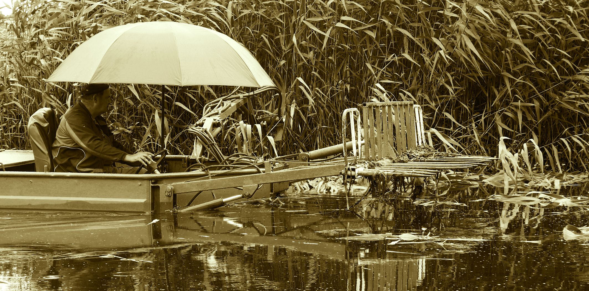
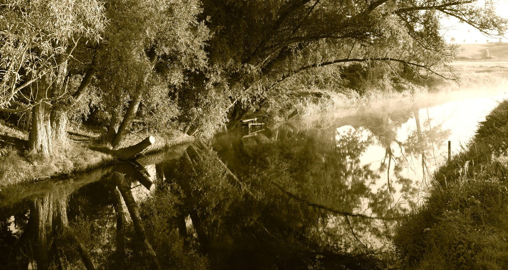

Wasser

Krautung und Böschungsmahd im Tollensetal
Das Tollense-Einzugsgebiet wird intensiv landwirtschaftlich bewirtschaftet. Daher gibt es hohe Nährstoffeinträge, die zu starkem Pflanzenwuchs führen. https://www.flussinfo.net/tollense
../index.html#archiv#page/15

MEIN WASSER MV
„Neue Gewässerschutz-Kampagne gestartet... Damit möchte das Land auch den Vorgaben der Wasserrahmenrichtlinie gerecht werden. Diese fordert für alle europäischen Gewässer einen Zustand hoher Wasserqualität und Strukturvielfalt, der genug Lebensraum für Pflanzen und Tiere bietet. Die letzte Bestandsaufnahme habe gezeigt, dass ca. 97 % der berichtspflichtigen Fließgewässer (ca. 8.000 km) dieses Ziel verfehlen... Den Gemeinden kommt dabei eine ganz besondere Bedeutung zu. Sie sind für 85 % der WRRL-berichtspflichtigen Gewässer zuständig und damit ein wichtiger Akteur im Gewässerschutz. „Unsere Erfahrung zeigt jedoch, dass sich viele Kommunen dieser Aufgabe gar nicht bewusst sind. Das wollen wir ändern, indem wir informieren und ganz konkret Unterstützung anbieten“, betonte Backhaus.“ PM Nr.221/17 | 07.07.2017 | LM | Ministerium für Landwirtschaft und Umwelt in MV Was ist konkret nach dem Kampagnestart passiert? Da müsse man sich erst mal schlau machen, so die Pressestelle. Wieso ist zu diesem Thema, dass bei den Top 5 auf Seite 1 steht, auf der ministeriellen Website, so wenig bekannt? Inzwischen sind gut 2 Monate vergangen. 7. Juli 2017: Minister Backhaus sprang in die Peene. Big Jump! Unsere Flüsse seien zu adipös, konnte er anlässlich des Europäischen Flussbadetages verkünden. Sie bekommen zu viel Nährstoffe und bewegen sich zu wenig. Anschließend kam er mit Kreislaufproblemen ins Krankenhaus. Inzwischen ist er jedoch wieder auf seinem Posten. Bundeslandwirtschaftsminister Christian Schmidt erlaubt den großen Tierhalterbetrieben hohe Stickstoffüberschüsse. Diese überfluten selbst bei größter Nässe das Tollensetal. Das muss endlich gestoppt werden. Es wäre doch zu schön, wenn dafür von versprochenen 60 Mill. Euro für naturnahe Gewässerentwicklung auch etwas im Tollensetal ankommen würde.